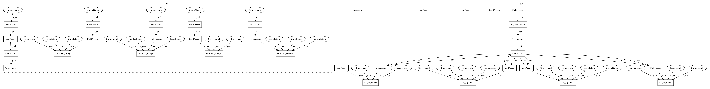

1fae78e75111eefed02904614db040f970cfdba3,tutorials/image/cifar10/cifar10_eval.py,,,#,46
Before Change
import cifar10
FLAGS = tf.app.flags.FLAGS
tf.app.flags.DEFINE_string("eval_dir", "/tmp/cifar10_eval",
Directory where to write event logs.)
tf.app.flags.DEFINE_string("eval_data", "test",
Either "test" or "train_eval".)
tf.app.flags.DEFINE_string("checkpoint_dir", "/tmp/cifar10_train",
Directory where to read model checkpoints.)
tf.app.flags.DEFINE_integer("eval_interval_secs", 60 * 5,
How often to run the eval.)
tf.app.flags.DEFINE_integer("num_examples", 10000,
Number of examples to run.)
tf.app.flags.DEFINE_boolean("run_once", False,
Whether to run eval only once.)
def eval_once(saver, summary_writer, top_k_op, summary_op):
Run Eval once.
After Change
import cifar10
parser = argparse.ArgumentParser()
parser.add_argument("--eval_dir", type=str, default="/tmp/cifar10_eval", help="Directory where to write event logs.")
parser.add_argument("--eval_data", type=str, default="test", help="Either `test` or `train_eval`.")
parser.add_argument("--checkpoint_dir", type=str, default="/tmp/cifar10_train", help="Directory where to read model checkpoints.")
parser.add_argument("--eval_interval_secs", type=int, default=60*5, help="How often to run the eval.")
parser.add_argument("--num_examples", type=int, default=10000, help="Number of examples to run.")
parser.add_argument("--run_once", type=bool, default=False, help="Whether to run eval only once.")
def eval_once(saver, summary_writer, top_k_op, summary_op):
Run Eval once.
In pattern: SUPERPATTERN
Frequency: 3
Non-data size: 33
Instances
Project Name: tensorflow/models
Commit Name: 1fae78e75111eefed02904614db040f970cfdba3
Time: 2017-09-21
Author: nolivia@umich.edu
File Name: tutorials/image/cifar10/cifar10_eval.py
Class Name:
Method Name:
Project Name: tensorflow/models
Commit Name: d34cf1819fc287fed24afd9564cbb445321fab01
Time: 2017-09-21
Author: nolivia@umich.edu
File Name: tutorials/image/cifar10/cifar10_multi_gpu_train.py
Class Name:
Method Name:
Project Name: tensorflow/models
Commit Name: 16454bdf7c716ba82190a54357f383dff3aff197
Time: 2017-09-21
Author: nolivia@umich.edu
File Name: tutorials/image/cifar10/cifar10_train.py
Class Name:
Method Name:
Project Name: tensorflow/models
Commit Name: 1fae78e75111eefed02904614db040f970cfdba3
Time: 2017-09-21
Author: nolivia@umich.edu
File Name: tutorials/image/cifar10/cifar10_eval.py
Class Name:
Method Name: